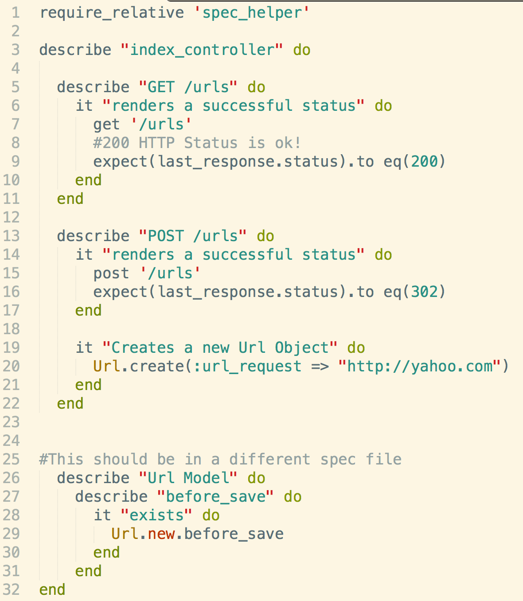

Testing Routes
Testing routes in Sinatra requires a ruby gem called Rack-Test that is built upon RSpec. You run these tests using RSpec in the console, and since RSpec is a DSL, you should try to remember the proper syntax. Here are a few examples of Rack-Tests. Note that you can test HTTP status (cats).
One thing that our DBC teacher mentioned in setting up our tests is to use the three a's
- arrange: prepare the test with w/e you need to create
- act: submit the test
- assert: test the test.(Redundant, I know.)
Below is an image of his HTTP route Rspec tests.